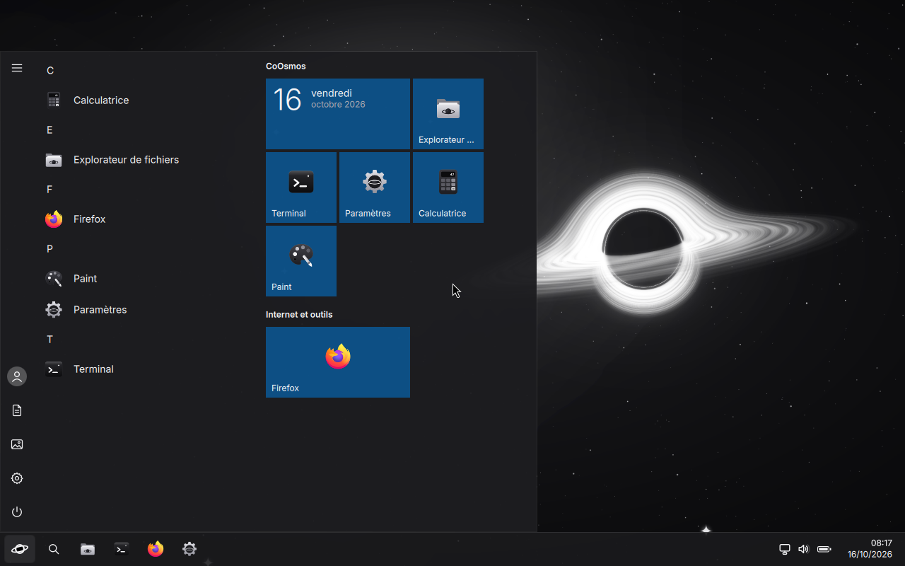
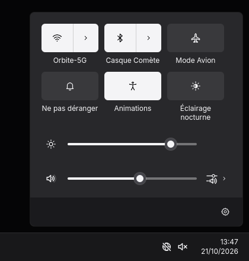
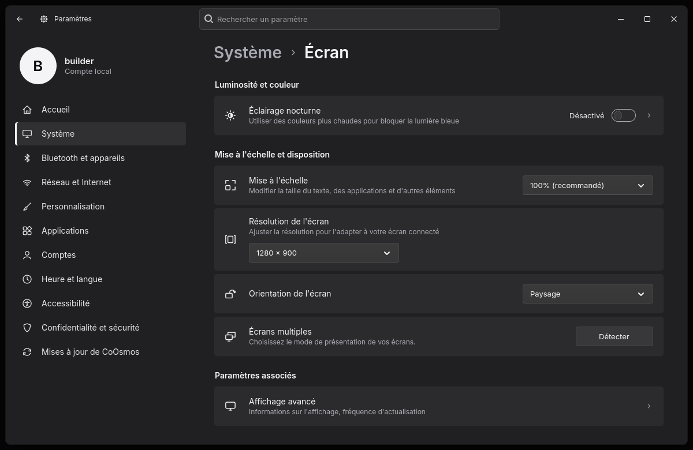
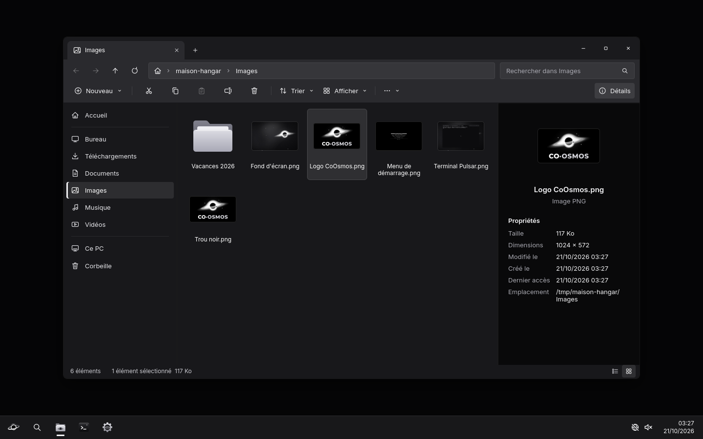
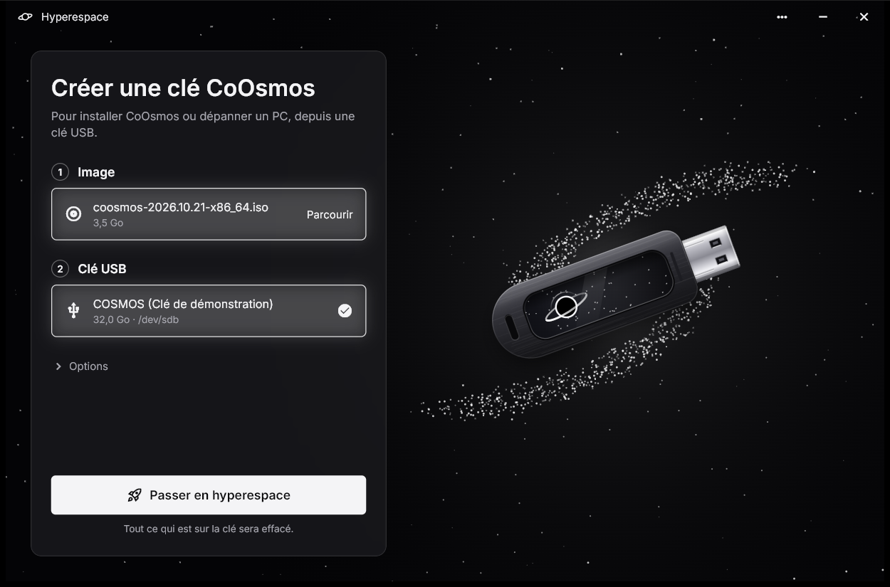
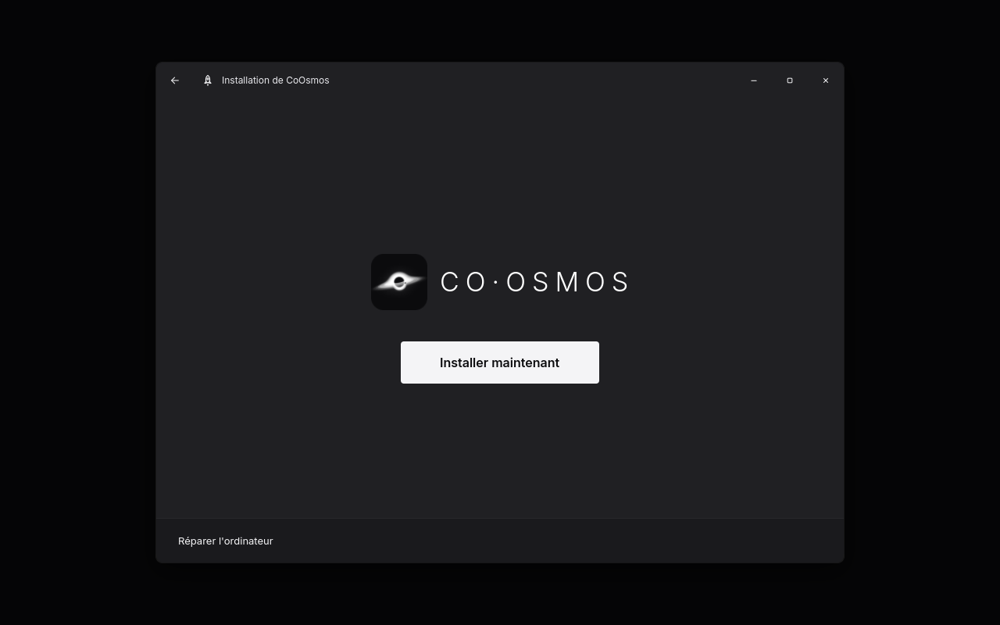
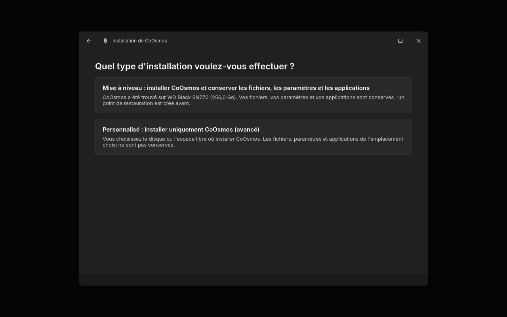
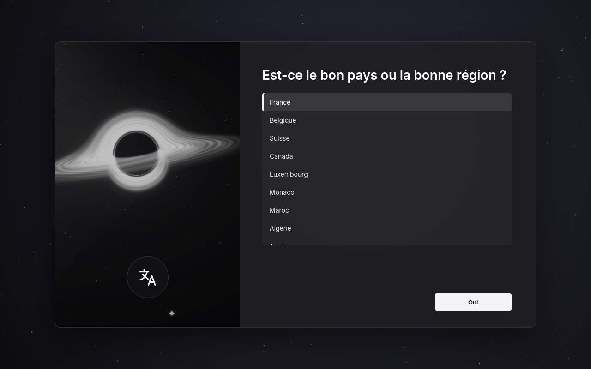

Orbite
Menu Démarrer et barre des tâches
Toutes les applications, les vignettes épinglées, la recherche, les notifications, Win+V pour le presse-papiers et Win+R pour Exécuter.
CoOsmos se manie comme Windows : menu Démarrer, barre des tâches, Paramètres, Explorateur de fichiers, et même vos programmes Windows. Dessous, Arch Linux. Sans compte à créer, sans publicité, sans aucune donnée envoyée.
L'interface de CoOsmos est en français pour l'instant ; les formats et les claviers de votre pays sont pris en charge.
Pas de nouvelle logique à apprendre : chaque chose est là où vous la cherchez. Cliquez sur la barre des tâches pour passer d'une application à l'autre.
Les applications de CoOsmos sont écrites pour lui, en français, au visuel de Windows 11. Le reste vient des meilleurs logiciels libres, réglés pour vous.

Toutes les applications, les vignettes épinglées, la recherche, les notifications, Win+V pour le presse-papiers et Win+R pour Exécuter.

Les réseaux connus se reconnectent tout seuls, comme sous Windows.

Les mêmes pages, dans le même ordre : Système, Bluetooth, Réseau, Personnalisation, Comptes…

Onglets, volet de détails, Ce PC, et « Retirer le périphérique en toute sécurité » pour les clés USB.
Un double-clic sur un .exe suffit : l'environnement Windows est préparé dès le premier démarrage.
Antivirus prêt, pare-feu activé, chiffrement du disque façon BitLocker, Secure Boot.
Mises à jour sans mot de passe, et un point de restauration avant chacune.
Capture avec annotations et vidéo, dessin, calculs, processus en direct.
uBlock Origin et Privacy Badger installés, et un bouton pour présenter aux sites une empreinte Windows ou Linux.
Un compte local, créé au premier démarrage. Rien à associer, rien à synchroniser.
Ni diagnostic, ni identifiant, ni statistique. CoOsmos ne parle à personne de vous.
Pas de suggestions dans le menu Démarrer, pas d'applications installées en douce.
Comptez une clé USB de 8 Go ou plus et une vingtaine de minutes : Hyperespace peut garder vos fichiers, et le reste de la place pour eux. Vous pouvez tout essayer avant d'installer quoi que ce soit.
Hyperespace télécharge la dernière version de CoOsmos, vérifie qu'elle est intacte, l'écrit sur la clé et relit tout avant de vous proposer de l'éjecter.

Branchez la clé, redémarrez, et appuyez aussitôt sur la touche du menu de démarrage de votre PC : souvent F12, F11, F8 ou Échap. Choisissez la clé : CoOsmos démarre en direct, sans rien toucher au disque.
CoOsmos-SecureBoot.cer, « Continue », « Yes » et « Reboot ». Une fois CoOsmos installé, cet
écran revient une fois : « Enroll MOK », puis le mot de passe orbite.
Comme l'installation de Windows : langue et clavier, contrat de licence, puis l'endroit où installer.

Pays, clavier, nom du PC, votre compte et sa photo, la couleur d'accent, la confidentialité. Puis le bureau. Le Wi-Fi rejoint pendant l'installation est déjà connu.

Une clé USB, vingt minutes, et un bureau que vous connaissez déjà. Essayez CoOsmos en direct : rien n'est installé tant que vous ne l'avez pas décidé.
Oui, sur autant d'ordinateurs que vous voulez. Vous pouvez aussi le redistribuer tel quel, le montrer en vidéo ou en capture.
Oui : installez CoOsmos dans l'espace libre du disque, à côté de Windows. Au démarrage, un menu vous laisse choisir. Sauvegardez quand même vos fichiers importants avant d'installer un système.
Beaucoup, oui : un double-clic sur un .exe le lance, grâce à Wine, préparé dès le premier démarrage. Les jeux protégés par un anti-triche et certains logiciels très liés à Windows peuvent refuser de fonctionner.
Comme Windows Update : CoOsmos les cherche tout seul, une icône apparaît dans la barre des tâches, et un point de restauration est pris avant chaque installation.
Oui : la clé démarre d'abord sur CoOsmos en direct. Vous pouvez tout essayer, puis lancer l'installation depuis le bureau, ou simplement redémarrer.
CoOsmos est créé par Bicode_DEV. Vous pouvez l'utiliser et le redistribuer tel quel ; copier ou réutiliser son code, ses visuels ou ses textes demande l'accord écrit de Bicode_DEV. Les logiciels d'autres auteurs qu'il contient gardent leur propre licence, et pour les parties sous GPL, c'est la GNU GPL v3 qui s'applique. Le texte complet est dans LICENCE.md.